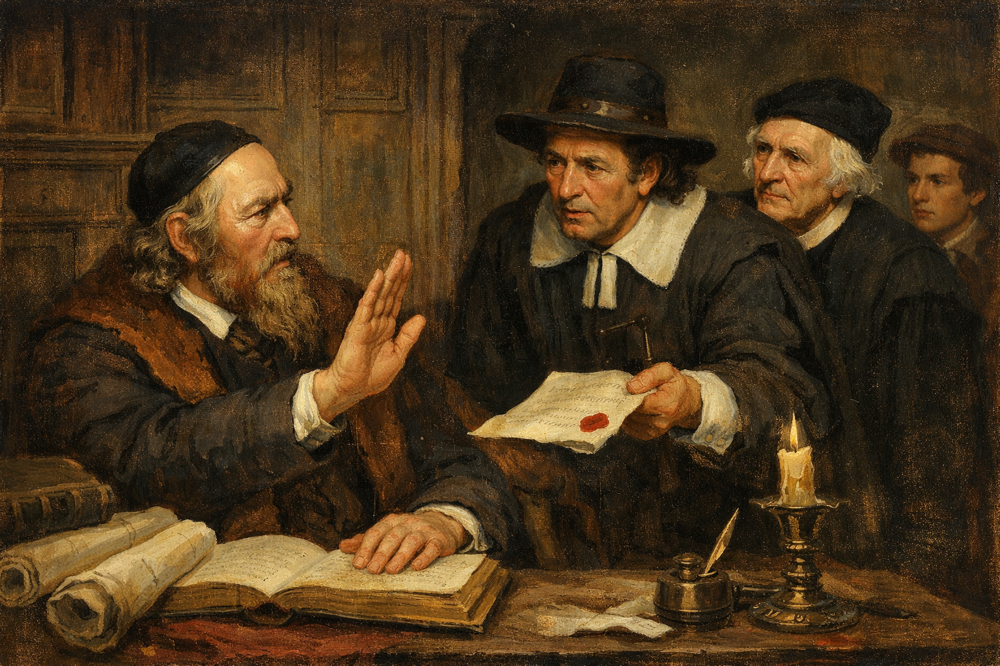

Má léta učednická
Touha po vědění mě nakonec přivedla na bratrskou školu do Přerova.
Tam jsem získal pevný základ, který mi v roce 1611 otevřel dveře do světa odjel jsem studovat na akademii do německého Herbornu.
Tamní profesor Alsted se stal mým velkým vzorem a ukázal mi krásu takzvané pansofie (vševědy),
tedy snahy obsáhnout a propojit veškeré lidské vědění.
Svá studia jsem poté nakrátko završil na univerzitě v Heidelbergu, abych se mohl vrátit do vlasti jako učitel,
kazatel a správce školy.

Zpět